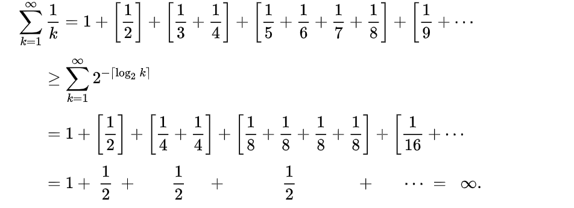
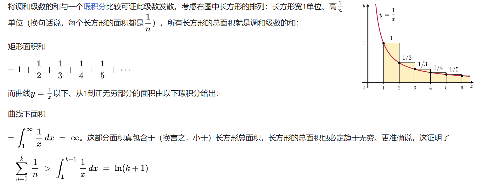
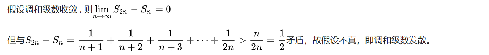

高等数学
重点难点积分公式
如你所见，这是一个链接：https://zh.wikipedia.org/wiki/积分表
常用积分公式：
等价无穷小
当x → 0，
用处：洛必达法则（在极限存在的情况下，分子分母都无穷小或无穷大，则分子分母同时分别求导），
大多可用taylor公式（taylor公式：f(x) = f(0) + f'(0)x + f''(0)/2!x^2 + ... + O(x^n)）
空间解析几何
右手坐标系
证明三个向量共面：(a ⨯ b) · c = 0
平面方程表达式：
点法式：A(x-x0) + B(y-y0) + C(z-z0) = 0
一般式：Ax + By + Cz + D = 0
截距式： + + = 1
点面距离公式形式和点线一致
空间曲线切向量：xyz三个方向关于t（或者x）的导数，用于切线方程、切平面方程
空间曲面法向量：xyz三个方向的各自偏导数（梯度），用于切平面方程、法线方程
一般式：Ax + By + Cz + D = 0
截距式： + + = 1
一些基础解题模板，不会不行，不懂就不懂，用就对了😥
求二元函数极值：两个偏函数等于零 求出驻点，分别在每个驻点上 ———— A = fxx(x0,y0)，B = fxy(x0,y0)，C = fyy(x0,y0)，B2-AC < 0，则有极值，其中A>0则为极小值。
链式法则的熟练运用：换元，一些证明题，尤其是那个u = 根号下x^2+y^2 这玩意，它的偏导可以表示成 x/u
级数求和函数：二话不说，先求导或者积分，尤其注意exx = （求和）xn/n!，看到 n! 就要想泰勒公式
证明收敛：拆分成收敛，比较（直接放缩 或者 用比值与0比较）（p级数，1/n是发散），积分（积分有上界），比值（下一项和这一项比值 的极限小于1），根值（比1小发散）
一些个人解题思想，🫥🪽
第一，不要畏难，其实积分的很多题和高中导数的一些题型很相似，只是积分看着很大一坨，实际上先把问题拆分来看，积分只是其中的一环，其他的在高中的时候你就会了。
全增量、全微分
在微积分中，函数f在某一点的全微分（英语：total derivative）是指该函数在该点附近关于其自变量的最佳线性近似。与偏微分不同，全微分反映了函数关于其所有自变量的线性近似，而非单个自变量。
全微分可以看成是把单变量函数的微分推广到多变量函数上：单变量函数的全微分与其微分相同；而多变量函数在某点的全微分为一线性映射，通常可用矩阵或向量表示。
充分条件：
必要条件：对于二元函数，在该点可微，则在该点的全微分为：
链式法则


方向导数和梯度
方向导数：偏导数的推广，表示某一函数沿着某一方向的变化率。
梯度：其方向是在该点的最快增长方向，其量是在这个方向的增长率。
利用方向导数描述梯度：函数f在P点的梯度grad f是一个向量，它的方向是函数f变化最快的方向，它的模就是函数f在P点的方向导数最大值。
全导数，偏导数，方向导数
二重积分和三重积分
直角坐标系和极坐标系，dxdy=r drdθ，dxdydz=r^2 sinφ drdθdφ
第一类曲线积分：ds = 根号下（ 两个关于t的函数的导数 的平方和） * dt
平面第二类曲线积分：参数法（转化为t的定积分）：Pdx + Qdy = { P(t) * (关于t的x函数的导数) + Q（t） * （关于t的y函数的导数） } * dt
极坐标：ds = 根号下（ 关于θ的r函数的平方 和 关于θ的r函数的导数的平方 之和） * dθ
格林公式:（L封闭、分段光滑、有向，P、Q具有一阶连续偏导）Pdx + Qdy = { (Q关于x的偏导) - （P关于y的偏导） } * dxdy
路径无关定理：不就是格林公式延展的特殊情况（不封闭，但是等式右边为0）吗，此时Pdx + Qdy 具有原函数u（x，y）
联系第一类曲线积分：Pdx + Qdy = { Pcosa + Qcosb } * ds 【cosa = （x关于t的函数导数 除以 根号下的各方向的关于t的函数导数的平方和）】
空间第二类曲线积分：参数法（就是变成三个而已），或者斯托克斯公式转化为曲面积分（封闭曲线 or 添加辅助线）
第一类曲面积分：投影法：F(x,y,z)dv = f(x,y,z(x,y)) * (根号下 1 + z关于x的偏导数的平方 + z关于y的偏导数的平方) * dxdydz
第二类曲面积分：投影法：F(x,y,z)dv = ( Pcosa + Qcosb +Rcosc ) dv = Pdydz + Qdxdz + Rdxdy
高斯公式：封闭 分片光滑 外侧 一阶连续偏导数，和格林公式的区别就是全是加法（都是没有的那个微分的偏导）
联系第一类曲面积分：前面有，转换投影（？）
极坐标：ds = 根号下（ 关于θ的r函数的平方 和 关于θ的r函数的导数的平方 之和） * dθ
格林公式:（L封闭、分段光滑、有向，P、Q具有一阶连续偏导）Pdx + Qdy = { (Q关于x的偏导) - （P关于y的偏导） } * dxdy
路径无关定理：不就是格林公式延展的特殊情况（不封闭，但是等式右边为0）吗，此时Pdx + Qdy 具有原函数u（x，y）
联系第一类曲线积分：Pdx + Qdy = { Pcosa + Qcosb } * ds 【cosa = （x关于t的函数导数 除以 根号下的各方向的关于t的函数导数的平方和）】
高斯公式：封闭 分片光滑 外侧 一阶连续偏导数，和格林公式的区别就是全是加法（都是没有的那个微分的偏导）
联系第一类曲面积分：前面有，转换投影（？）
散度与旋度（向量分析）
散度与通量，旋度与环量
---------------------------
散度：向量分析中的一个向量算子，将向量空间上的一个向量场（矢量场）对应到一个标量场上。三维空间的散度（且一阶连续偏导）：
相关：四元数（散度研究起源），电场力
高斯散度定理（Gauss's Divergence Theorem）：空间闭区域Ω是由分片光滑的闭曲面Σ所围起来的三维区域，则有


高斯公式散度表示：

---------------------------
旋度（curl或者记作rot）：是一个向量算子，表示在三维欧几里德空间中的向量场的无穷小量旋转。在向量场每个点上，点的旋度表示为一个向量，称为旋度向量。这个向量的特性（长度和方向）刻画了在这个点上的旋转。

相关：四元数，光学场理论
斯托克斯定理：

其旋度表示：
微分方程
几种常见微分方程：
大学物理
第一：积分思想
第二：三维高度
第三：不懂装懂
第四：类比高中
级数
级数（英语：Series）是数学中一个有穷或无穷的序列之和，如果序列是有穷序列，其和称为有穷级数；反之，称为无穷级数（一般也简称为级数）。
柯西审敛准则（在一个完备空间中）：对任意的 ，总存在N0>0，使得任意的n>m>N0，
，总存在N0>0，使得任意的n>m>N0，
，总存在N0>0，使得任意的n>m>N0，
调和级数
调和级数（英语：Harmonic series）: 
比较审敛法：
积分判别法（integral test）：
反证法：
相关级数：
交错调和级数： ；拓展：墨卡托级数（自然对数的泰勒级数形式）、π的莱布尼茨公式。
；拓展：墨卡托级数（自然对数的泰勒级数形式）、π的莱布尼茨公式。
广义调和级数： ，（a！=0，b为实数），由比较审敛法可知广义调和级数全部发散。
，（a！=0，b为实数），由比较审敛法可知广义调和级数全部发散。
p级数： ，p<=1发散，p>1收敛（过饱和调和级数）（其和也就是黎曼ζ函数在p的值）
，p<=1发散，p>1收敛（过饱和调和级数）（其和也就是黎曼ζ函数在p的值）
随机调和级数： ，其中分子是恒等分布的独立随机变量，取值范围为+1和-1，取这两值的概率都是0.5。该级数收敛的概率是1。
，其中分子是恒等分布的独立随机变量，取值范围为+1和-1，取这两值的概率都是0.5。该级数收敛的概率是1。
；拓展：墨卡托级数（自然对数的泰勒级数形式）、π的莱布尼茨公式。，（a！=0，b为实数），由比较审敛法可知广义调和级数全部发散。，p<=1发散，p>1收敛（过饱和调和级数）（其和也就是黎曼ζ函数在p的值），其中分子是恒等分布的独立随机变量，取值范围为+1和-1，取这两值的概率都是0.5。该级数收敛的概率是1。
泰勒级数
傅里叶级数


 ;
; ，
， ，
，


 前者为平均数，后者为标准差。
前者为平均数，后者为标准差。

 克鲁斯克尔算法（英语：Kruskal's algorithm）
克鲁斯克尔算法（英语：Kruskal's algorithm）
{kind=link}
{kind=link}
{kind=link}
{kind=link}
{kind=link}